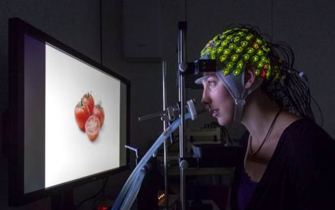
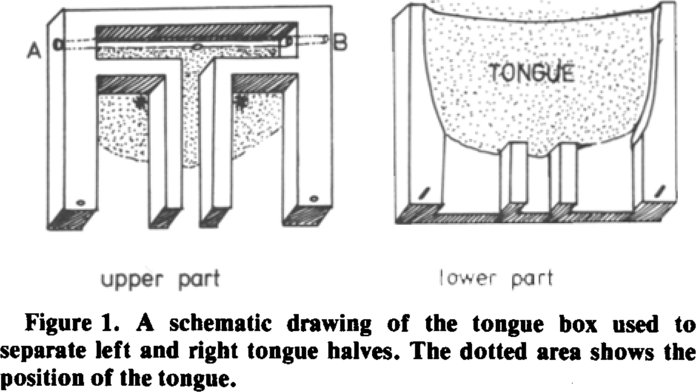

Richard Höchenberger
Cognitive Neuroscientist
Looking for Assistance: Development of a taste delivery system for human testing
Who we are
 The junior research group Psychophysiology of Food Perception (PSY) at the German Institute of Human Nutrition Potsdam-Rehbrücke (DIfE) investigates the perception and evaluation of food. We employ sophisticated techniques to deliver food-related stimuli (tastants, odors, images) to human participants in a tightly controlled environment and record behavioral and systemic responses such as reaction times, brain activity (EEG), and heart rate (ECG).
{kind=link}
Background and goals
 The neural processes involved in taste processing and taste perception are only partly understood. The study of the respective contributions of
peripheral (“on the tongue”) and central (“within the brain”) processing mechanisms to the perception of taste requires the ability
to deliver minuscule amounts of liquid tastants to the left and right side of the tongue independently (lateralized stimulation)
with high temporal precision, while avoiding uncontrolled spreading of the liquid.
The lab currently employs a Burghart GU002
gustometer in most studies. This device delivers liquid tastants as a spray pulse onto the tip of the tongue, always initiating a bilateral stimulation.
The neural processes involved in taste processing and taste perception are only partly understood. The study of the respective contributions of
peripheral (“on the tongue”) and central (“within the brain”) processing mechanisms to the perception of taste requires the ability
to deliver minuscule amounts of liquid tastants to the left and right side of the tongue independently (lateralized stimulation)
with high temporal precision, while avoiding uncontrolled spreading of the liquid.
The lab currently employs a Burghart GU002
gustometer in most studies. This device delivers liquid tastants as a spray pulse onto the tip of the tongue, always initiating a bilateral stimulation.
We also have two additional syringe pump based apparatuses, namely the Burghart OG001 and the Cetoni neMESYS low-pressure syringe pump system. These devices enable the experimenter deliver different tastants through separate tubes, providing a potentially promising starting point for the development of a lateralized taste stimulator.
The goal of the project is to design, construct, and validate a new type of taste stimulator or an extension to our existing apparatuses that allows for a computer-controlled, temporally precise lateralized delivery of liquid tastants onto the human tongue. (See also the next section for a detailed outline of the specific requirements.)
{kind=link}
{kind=link}
{kind=link}
Requirements
- The taste stimulator must support delivery of liquid tastants onto the left and right sight of the tongue.
- It must allow for random sequences of "left", "right", and "bilateral" stimulation during a single experimental session.
- Stimuli applied to one side of the tongue should never cross the midline and flow to the other side.
- All components that come into contact with the liquid tastants and the participants must be of "food-grade" quality, i.e., non-toxic and tasteless.
- Parts that will be contaminated with participants' saliva must be easy to disinfect using alcohol.
- As experimental sessions usually last for one hour (sometimes longer), the stimulator should not force participants into an uncomfortable posture or hurt the gums or palate.
- We require precise temporal control of the stimulus onset (i.e., in the milli-second range).
- After each stimulus presentation, the tongue has to be rinsed with pure water. Of course, all liquids that enter the mouth need to get out of there again, without swallowing.
 The tricky part is the actual "device-tongue interface". A very simple apparatus – called the tongue box – was used in a 1979 study by Jan Kroeze, mechanically separating the left and right side of the tongue by a small stream of water (see figure). This approach seems to be very simple, yet effective. Still, the "perfect" stimulator would not require participants to stick out their tongue for an extended period of time, e.g. by using a custom-made mouthguard of some sort that allow for "in-mouth" stimulus delivery. However, ensuring that stimuli do not cross the tongue midline, and removing excess fluid from the oral cavity will likely be complicated by this approach.
{kind=link}
This project requires a creative and playful mind, mechanical and technical expertise, and an appreciation of unconventional solutions. You must be able to work independently and enjoy interaction with the other team members who have a background in cognitive neurosciences and psychology. We are mostly using Python and Matlab for experimental control, data collection, and analysis. Therefore, experience with either (or a related) scripting language would be desirable, but it not a requirement.
Applicants must be formally enrolled at a German university. If this does not apply to you, please get in touch with me to discuss possible alternative solutions.
What we offer
We offer a vibrant and interdisciplinary research environment and flexibility as to the type of employment (position as a student assistant, a thesis project, or an internship) and working hours. The position is to be filled as soon as possible. The starting date, duration, and weekly hours are negotiable; however, monthly payment must not exceed € 450 (9.05 €/h for Bachelor's students; 11.01 €/h for Master's students).
Interested? Get in touch!
Please submit your application (letter of motivation, CV, copy of diplomas, no photograph) in English or German directly to me: richard.hoechenberger@dife.de Please also do not hesitate to contact the me if you have any further questions. Looking forward to working with you!